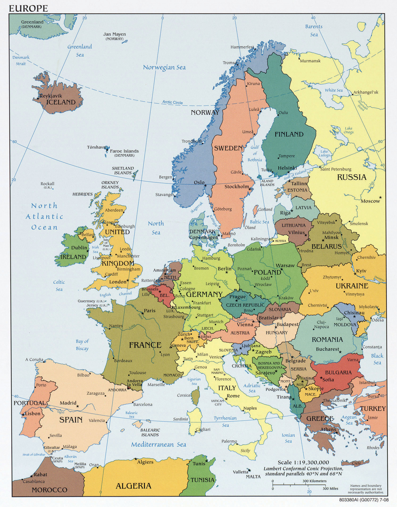
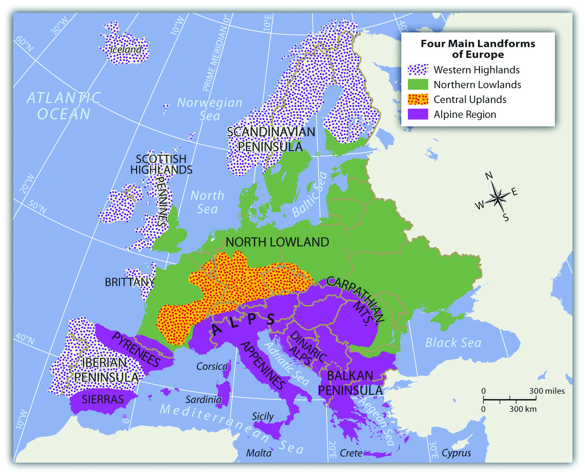
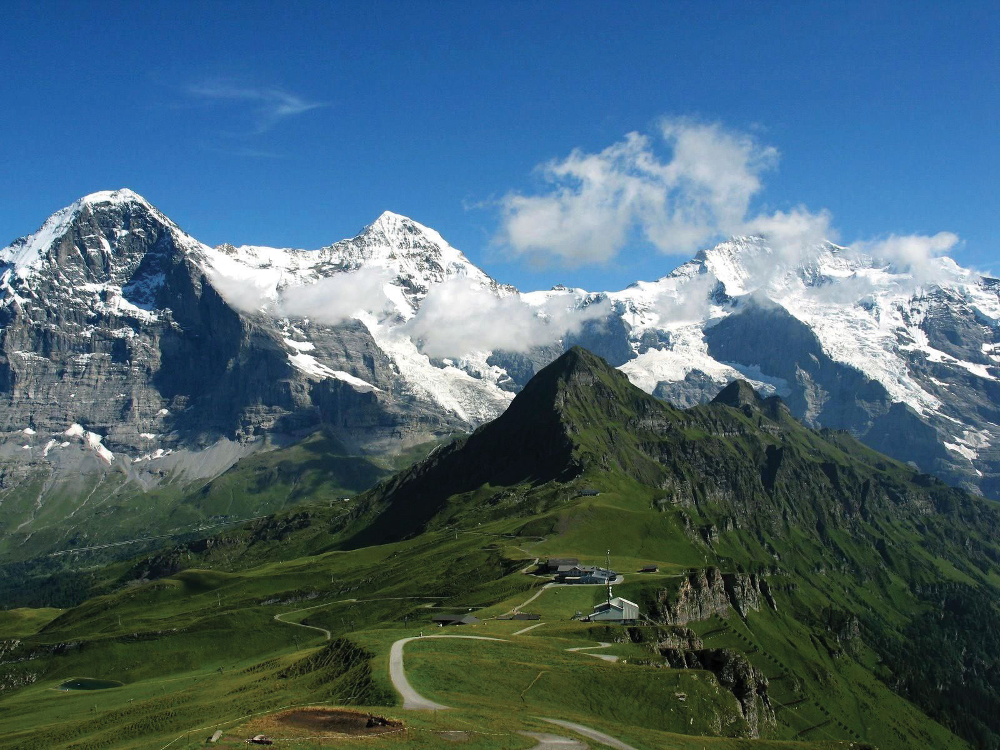

From the Roman Empire to the European Union (EU), Europe’s historical pattern of development is a model study in regional geography. From historic empires to diverse nation-states to a multicountry union, the continent struggles to confront the cultural forces that unite and divide it. The powerful impact European colonialism has had on the world since the Industrial Revolution is still felt today. The rural-to-urban shift prompted by the Industrial Revolution first impacted Europe and continues to impact developing countries. Understanding the geographic region of Europe is essential to understanding our world. This short summary of the basic concepts will provide a valuable lesson in globalization, which affects every human being on the planet. The concepts and principles that apply to Europe can also apply to other countries and regions.
Figure 2.1 Map of Europe
Source: Map courtesy of University of Texas Libraries, http://www.lib.utexas.edu/maps/europe/txu-oclc-247233313-europe_pol_2008.jpg.
Europe is a northern continent. All the British Isles, for example, fall above the fiftieth parallel. If we compare Europe’s position on a globe with that of the contiguous United States, we see that much of Europe lies north of the United States. Paris, France, is at about the same latitude as Fargo, North Dakota. Athens, Greece, is at about the same latitude as St. Louis, Missouri. Europe’s northern position affects its growing seasons and people’s moods, and it should be taken into consideration as an important influence in the evolution of the European character. Europe is also surrounded by bodies of water: the Atlantic Ocean borders Europe on the west, the Arctic Ocean borders Europe to the north, and many seas surround the various peninsulas and coastal regions.
The oceans exert significant influence on the world’s climates. The oceans collect and store vast amounts of solar energy, particularly around the equator, and transport that heat with their currents. Ocean currents can move water for thousands of miles from one temperature zone to another. Because oceans can absorb so much heat, maritime climates are often milder than continental ones, with smaller temperature variations from day to night as well as from winter to summer. This influences not only temperature but also precipitation patterns over wide regions of Europe and the rest of the world. Water moderates coast environments in a number of ways. Water heats and cools more slowly than land. This heat inertia allows coastal communities to have climates that tend to be more moderate than one might imagine for places so far north. Interior Europe does not benefit from coastal waters and can have winters as cold as those found within the upper midwestern United States.
Figure 2.2 The Dominant Climate Types of Europe

The Gulf StreamOcean current that carries warmer water from the South Atlantic to the North Atlantic and moderates the temperature of Western Europe. is perhaps the most important current for Western Europe’s climate and is responsible for producing a temperate climate for a northern latitude location. Most of Western Europe has a moderate type C climate. The Gulf Stream originates in the Gulf of Mexico, where the waters are warmed. This powerful current follows the Eastern Seaboard of the United States before crossing the Atlantic Ocean for Europe. The Gulf Stream’s most dramatic effect can be found in the western coastal islands of Scotland, which has a mild enough climate to support some forms of tropical flora, even though it is a degree of latitude as far north as Hudson Bay, Canada.
The coast of Norway provides another example. While most of Norway’s coastal area lies within the Arctic region, it remains free of ice and snow throughout the winter. People living farther inland and closer to Eastern Europe and Russia encounter the colder type D climates. Colder air sweeps down from the Arctic north or from eastern Siberia and provides colder winters in this eastern region. The Mediterranean Sea moderates the temperature to the south, providing a type C climate around its shores. Type C climates meet up with type E climates at or near the Arctic Circle in Norway and in Iceland.
Europe has four main landforms, many islands and peninsulas, and various climate types. The four main landforms include the Alpine region, Central Uplands, Northern Lowlands, and Western Highlands. Each represents a different physical part of Europe. The wide-ranging physical environment has provided Europe with an abundance of biodiversity. Biodiversity refers to diversity of the number of species in an ecosystem and the quantity of members in each species. The physical environment also provides natural resources and raw materials for human activities. Europe’s moderate climates and favorable relative location are supported by its access to the many rivers and seas. These advantageous developmental factors supported the development of the Industrial Revolution in Europe, which gave rise to highly technical and urban societies. Europe has emerged as one of the core economic centers of the global economy. Associated with the urbanization of Europe are high human population densities that have placed a strain on the natural environment. As result, there has been significant deforestation and the loss of natural habitat, which has in turn has decreased the realm’s level of biodiversity.
Rivers are abundant in Europe and have provided adequate transportation for travel and trade throughout its history. Most of Europe is accessible by water transport either via the many rivers or along the extensive coastlines of the peninsulas and islands. Two main rivers divide Europe: the Danube and the Rhine. Both have their origins in the region of southern Germany on or near the border with Switzerland. The Rhine River flows north and empties into the North Sea in Rotterdam, Holland, one of the world’s busiest ports. The Danube flows east through various major European cities, such as Vienna, Budapest, and Belgrade before emptying into the Black Sea.
Figure 2.3 Four Main Landforms of Europe: Western Highlands, Northern Lowlands, Central Uplands, and the Alpine Region
The High Alps, which range from eastern France to Slovenia, are central to the Alpine region. Included in the Alpine Range are the Pyrenees, located on the border between France and Spain; the Apennines, running the length of Italy; the Carpathians, looping around Romania from Slovakia; and finally, the shorter Dinaric Alps in former Yugoslavia. Mountains usually provide minerals and ores that were placed there when the earth’s internal processes created the mountains. Mountains also isolate people by acting as a dividing range that can separate people into cultural groups.
Figure 2.4 The Alpine Region: Eiger, Mönch, and Jungfrau from Männlichen—Swiss Alps
Source: Image courtesy of Steinmann, http://commons.wikimedia.org/wiki/File:Eiger,_M%C3%B6nch_und_Jungfrau.jpg.
The Alpine region encircles the Mediterranean coastlines, which have more temperate type C climates that are particularly warm with hot, dry summers and cool, wet winters. This climate type allows for the cultivation of food products such as olives, citrus fruit, figs, apricots, and grapes. Evergreen scrub oaks and other drought-resistant shrubs are common in the Mediterranean region.
The region bordering the main Alps to the north, which includes a large portion of southern Germany extending eastward, is known as the Central Uplands. These foothills to the Alps are excellent sources of raw materials such as forest products and coal, which are valuable resources for industrial activities. The Central Uplands are also good locations for dairy farming and cattle raising. This middle portion of the continent has a mixed deciduous-coniferous forest, and the vegetation includes oak, elm, and maple trees intermingled with pine and fir trees. There are four distinct seasons in this region with moderate amounts of precipitation year round.
Figure 2.5

The Western Highlands meet the lowlands in central Scotland.
Source: Photo by R. Berglee.
Similar to the breadbasket of the midwestern United States, Europe’s Northern Lowlands possess excellent farmland. Major agricultural operations here provide for a large European population. The land is flat to rolling with relatively good soils. The Northern Lowlands are a great plain that extends across northern Europe from southern France, north through Germany, and then all the way to the Ural Mountains of Russia. This area is typified by prairies and areas of tall grasses and is mostly used as farmland. The lowlands area also contains bogs, heaths, and lakes. The eastern part of this great plain around Ukraine is characterized by a steppeTemperate grasslands in a semiarid region that does not receive enough rainfall for forests but is not dry enough to be a desert. biome. It is a flat and relatively dry region with short grasses and is generally an agricultural region. This eastern area has great swings in temperature, both from day to night and from summer to winter. Winter temperatures in the eastern steppe can drop to below −40 °F, with summer temperatures reaching as high as 105 °F. This is similar to the steppes of eastern Montana or western North Dakota in the United States.
On the western edges of the European continent arise short rugged mountains called highlands that extend throughout Norway, parts of Britain, and portions of the Iberian Peninsula of Portugal and Spain. These Western Highlands hold sparser populations and are less attractive to large farming operations. Agriculture is usually limited to grazing livestock or farming in the valleys and meadows. The Scottish Highlands are noted for their wool products and Highland cattle. In England, the central chain of highlands called the Pennines proved valuable during the Industrial Revolution because they enabled hydropower and, later, coal mining. Coal mining was prominent in the highland regions of Wales. In the far northern regions of ScandinaviaThe three northern European countries of Norway, Sweden, and Denmark., tundraBiome with short growing seasons and colder temperatures that is usually found in northern latitudes near the Arctic. environments prevail. In this coldest and driest biome, permafrost dominates the landscape, and the land becomes soggy for brief periods during the few weeks of summer. The flora consists primarily of lichens, mosses, low shrubs, and wildflowers.
The physical landforms of Europe provide a diversity of geographic opportunities that have catapulted Europe through the Industrial Revolution and into the information age. With an abundance of natural resources, European countries have gained wealth from the land and leveraged their geographic location to develop a powerhouse of economic activity for the global marketplace. Europe has placed a strong focus on manufacturing activity to take advantage of its natural resources. The highly urbanized society has struggled to find a balance between modernization and environmental concerns. Industrial activities have contributed to the degradation of the environment and the demise of a number of species.
Different regions of Europe are blessed with fresh water supplies, good soils, and various minerals. Chief among the mineral deposits in Europe is iron ore, which can be found in Sweden, France, and Ukraine. Other minerals exist in smaller quantities, including copper, lead, bauxite, manganese, nickel, gold, silver, potash, clay, gypsum, dolomite, and salt. Extraction activities have supported the continent’s industrialization.
The ready access to vast areas of the Atlantic Ocean and a number of major seas, lakes, and rivers has elevated fish to an important natural resource in Europe. The seas around Europe provide about 10 percent of the world’s fish catches. Mirroring the situation around the world, European fishing activity increased as population increased. Europeans are becoming increasingly aware of the effects of overfishing. Stocks of Atlantic cod and Atlantic mackerel are considered to be at risk because of the twin threats of overfishing and changes in the environment that are affecting natural mortality and slowing spawning. Stocks of eastern North Atlantic bluefin tuna are also attracting attention for the same reason. Other species of fish in the North Atlantic and the Baltic Sea are considered overexploited. Changes to the fishery are a major concern for strictly ecological reasons and also because fish comprise such a significant portion of the European economy.
The countries of Europe, with the formation of the EU, began to work toward shared research and policies with respect to the fishery. The Common Fisheries Policy was drafted and includes strict and extensive rules and guidelines for fishing, particularly of cod. The rules are so strict and thus so controversial that Norway and Iceland decided to opt out of the EU rather than agree to abide by these rules. The effect of these rules is incompletely known, but the cod stocks in the North Sea do not seem to be rebounding as quickly or substantially as expected.
Forest covers more than 40 percent of the continent’s land area, with the majority on the Russian side. Forests exist primarily in the less populous Nordic and Baltic countries and in Central Europe. About half the forest land in Europe is privately owned. Interestingly, there are several different forms of private ownership, including large family holdings, holdings by forest industries, and small to very small holdings by thousands of individuals. Most of the forested land is managed, and about 85 percent of the forests produce exploitable resources. The percentage of forested land in Europe is rebounding because of an extensive tree-planting initiative since 2000. Pollution has caused great harm to the forests of Poland, the Czech Republic, and eastern Germany, and acid rainWhen nitrogen oxides and sulfur dioxide mix with water molecules in the atmosphere to create acidic precipitation. and air pollution have seriously harmed forests such as the Black Forest of southern Germany, which has also experienced heavy logging activity.
Soil resources are of critical importance. Soil is necessary for growing food, supporting livestock, supporting other natural resources such as the forests, and supplying groundwater. Soil resources are only just beginning to receive attention in Europe. Problems to be addressed include loss of topsoil from development and building activities, older-style agricultural practices, mining, contamination from industries and other sources, and acidification as a result of acid rain.
Coal, now substantially depleted, is abundant in several areas of Great Britain, including some offshore areas, as well as in the industrial centers of Germany and in Ukraine. Other coals deposits are found in Belgium, France, Spain, the Czech Republic, Poland, Slovakia, and Russia. The burning of coal has produced high levels of air pollution. Acid rain has been a major concern in the northern countries, where wind currents carry pollutants north into Scandinavia from the industrial regions of Central Europe. In Scandinavia, acid rain has diminished fish populations in many of the lakes. Forest health is also being challenged, which is diminishing the economic conditions of regions that depend on forests for their economic survival.
Petroleum and natural gas deposits exist underneath the North Sea and were first tapped in the 1970s. Five European countries have rights to these resources, including Norway, the United Kingdom, Denmark, the Netherlands, and Germany, with Norway holding the bulk of the rights. The governments of these five nations agree that, although tapped only decades ago, half the North Sea oil reserves have been consumed.
Before the extraction of petroleum products from the North Sea, Russia and the former Soviet Union’s other republics supplied petroleum to Europe. These areas still have a number of active extraction operations. Hydroelectric power has been important in Europe as well. With both coal and oil resources largely depleted and the desire to avoid the environmental damage caused by dams, the European Energy Commission is devoting substantial energy and resources to encouraging use of renewable resources such as wind and solar energy. In March 2007, European leaders agreed that a binding target of 20 percent of all energy must be from alternative sources by 2020. Also, 10 percent of the transportation fuels used by EU members must be sustainable biofuels.
Identify the following key places on a map: